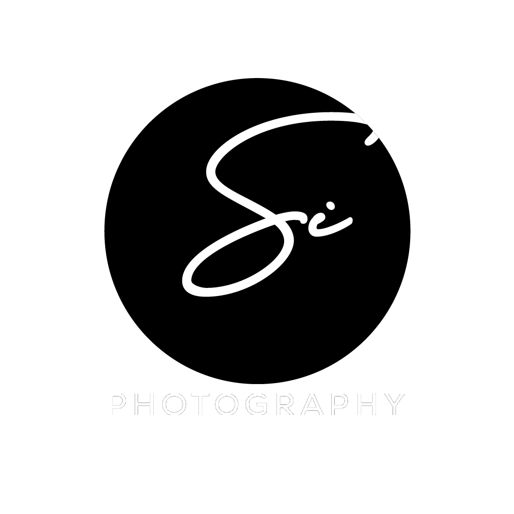

Sam founded Si Photography in Lagos on a simple belief: the best portraits happen when people forget the camera is there. A decade behind the lens has shaped an approach that's unhurried, attentive, and led by whoever is in front of it.
From intimate family sittings to full conference coverage, the same instinct guides every session — find the real moment, then get out of its way.